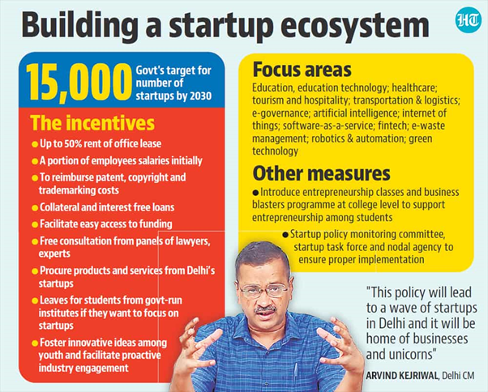

Delhi Startup Policy: Highlights
On 5th May 2022, The Delhi Government announced its startup policy named as “Delhi Startup Policy”. The government aims to provide fiscal and non-fiscal incentives to the youth who want to build their own start-ups.
Objective
-
To provide an enabling ecosystem for an innovation-based economy
-
To help Delhi become a global innovation hub.
-
To make Delhi the preferred destination for startups by 2030
-
To create an enabling ecosystem for innovation-based economy and to foster entrepreneurial spirit through a robust support mechanism
-
To “encourage, facilitate and support” 15,000 start-ups by 2030
Focus Areas
-
Education and Education technology
-
Healthcare and Health technology
-
Tourism and Hospitality
-
Transportation & Logistics
-
Automotive
-
E-governance for Business and Citizen connect
-
Artificial Intelligence (AI)
-
Machine Learning (ML)
-
Internet of Things (IoT)
-
Software-as-a-Service (SaaS)
-
Fintech
-
E-waste management
-
Robotics & Automation
-
Green Technology
-
Bio-pharma & Medical Devices
-
IT & ITES.
Highlights
-
Entrepreneurship classes and a “Business Blasters Program” would be introduced at the college level
-
Delhi government will help startups get collateral-free loans which will be interest-free for a year.
-
Delhi government will empanel CAs, lawyers and experts to aid startups for free; their service charges will be borne by the government.
-
Students building start-ups while studying in Delhi government colleges will be able to seek 1-2 years of leave.
-
Three committees will be set up for the implementation and governance of the policy: the start-up Policy Monitoring Committee, a start-up Task Force, and a Nodal Agency.

Start-up Policy Monitoring Committee
-
A Start-up Policy Monitoring Committee will be formed to oversee the Delhi Start-up Policy headed by the Finance Minister of the Delhi Government. It will consist of the Industries Minister of Delhi Government and senior representatives of other state departments as members.
-
The Committee will consist of 5 per cent government representatives, 10 per cent educational institutions and 85 per cent people from the private sector.
Start-up Task Force
-
A 20-member task force will also be set up to oversee the registration of start-ups
-
This task force will have a government official, academics, as well as business and trade representatives
-
An officer will be appointed by the Minister of Industries, Government of Delhi to chair the Start-up Task Force.
-
The main function of the committee would be to evaluate and approve the applications of recognized entrepreneurs, start-ups, and incubators.
Nodal Agency
-
The nodal agency will have a cell under the supervision of the Industries Department to implement the Start-up Policy. It will have direct contact with start-ups and stakeholders.
Fiscal Incentives
-
Reimbursement on lease rentals — 50% up to INR 5 lakh per annum
-
Reimbursement grants for filing Patent/ Trademark/ Copyright/ Industrial Design — up to INR 1 lakh (Indian) & up to 3 lakhs (international)
-
Reimbursement for exhibition stall/rental cost — 100% for women/ underprivileged/ differently-abled persons & 50% for others up to INR 5 lakh once a year
-
Monthly allowance towards operational/ employee cost — INR 30 thousand per month for one year
-
Token prizes for the winner of competitive programmes & selected Start-ups
-
Scholarship towards educational fee for student winners
-
Financial grants towards capital and operational expenditures in the establishment
-
Expansion and operation of incubation centres, fabrication labs and co-working spaces
-
Financial support for procurement of key software upto 50%
-
Reimbursement on Internet charges — 50% up to a maximum of INR 2.5 lakh p.a for 3 years
-
Fund-of-funds with an initial corpus of INR 20 crore
Non-Fiscal Incentives
-
Handholding young entrepreneurs and help them seek the best advice free of cost from a panel of experts
-
Developing a conducive curriculum for students
-
Facilitating strong linkages between the start-up and industry association
-
Facilitating participation of companies for subsidised subscriptions of technology offerings
-
Organising fundraising events
-
Relaxing government procurements process for start-ups
-
Access to government data to drive e-governance pilot projects
Conclusion
Coming up with a Start-up Policy, the Delhi Government have put the right foot forward in the right direction to make Delhi a start-up hub. Delhi has right backdrop for the development of start-up culture in terms of good educational institutes, research institutes and right kind of talent pool drawing from all over the India as it is a prominent growth pole in this region of the country. If implemented properly, this policy is going to be an enabler to establish start-up ecosystem in the state.